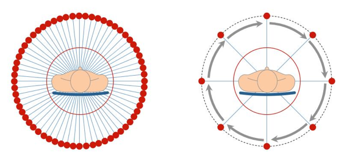

PETソフトウェア開発プロジェクト概要
このプロジェクトではより少ない投影データからの画像再構成法の開発を目的としています. この手法の発展は，患者の放射線による被曝量を低減し, スキャン時間の短縮に貢献している.ＰＥＴは体内の機能を断層像として画像化する装置です。
|  |
| fig1 : CTスキャンの構成. フルスキャン(左) 少数方向スキャン(右) |
 |
| fig2 : 腹部のCT画像. 従来手法を用いたフルスキャン(左) 従来手法を用いた少数方向スキャン(中央) 提案手法(右) |
Copyright © 2005 Image Science Lab. All rights Reserved.